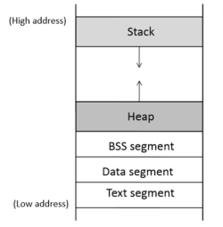
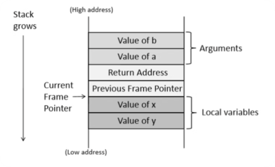

Buffer Overflow¶
32位Buffer Overflow¶
概述¶
-
Error/bug：可能使程序无法实现预设目的
-
vulnerability：会遭受攻击
-
Attack：利用脆弱性实现攻击者的额外功能，例如：权限提升、任意代码执行
类型安全(Type safety)¶
Java拥有严格的类型定义系统；会在编译运行时检查程序是否安全，如检查输入是否越界；会自动释放不使用的资源。
C使用较差的类型定义，其数组可以越界，需要手动进行内存管理。
如下面这段C代码，其输出为3，说明C中的数组可以对数组外的内容赋值和调用，其本质为数组基地址(数组名) + 偏移量(数组内序号)，如a[11]表示a[0]后面偏移11个整数长度的位置的内容。
常见的字符串漏洞¶
gets
gets()函数在接收输入时不会检测长度，并将接收到的字符串全部输入给char数组，导致数组越界。
如这段代码，如果我输入一个大于16的字符串，a仍会输出这个越界的字符串直到遇到'\0'
可以使用fgets()代替gets()，其可以指定取用的长度
strcpy and strcat
与gets类似，strcpy和strcat不会检测字符串长度是否引起越界。
可以使用
-
strncpy()
-
strncat()
等进行替代。
Null-Termination Errors
即使使用了新的函数，程序仍然可能不安全，下面是一个例子：
1 2 3 | |
即字符串a的末尾没有'\0'，导致输出了数组后面的内容。
函数调用时的内存分布¶
程序的内存分布如下

对于下面这个函数，分析其变量的存储位置
对于函数
其存储如下

-
函数调用时传入的变量从右到左依次入栈
-
Return Address 为函数结束后返回的地址
-
Previous Frame Pointer 为函数调用前栈指针的位置，32位中使用ebp表示
-
新的栈指针指向局部变量开始的位置
这些内容在内存中如下排列
| 低地址 | ---> | ---> | ---> | ---> | 高地址 |
|---|---|---|---|---|---|
| y | x | old ebp | ret addr | a | b |
由于将地址高的位置作为栈底，处于较低位置的局部变量可以将内容溢出到ret addr等位置，从而返回到错误的地址，此时在这个位置传入shellcode(能够打开shell的一段代码)，就可以成功攻击。